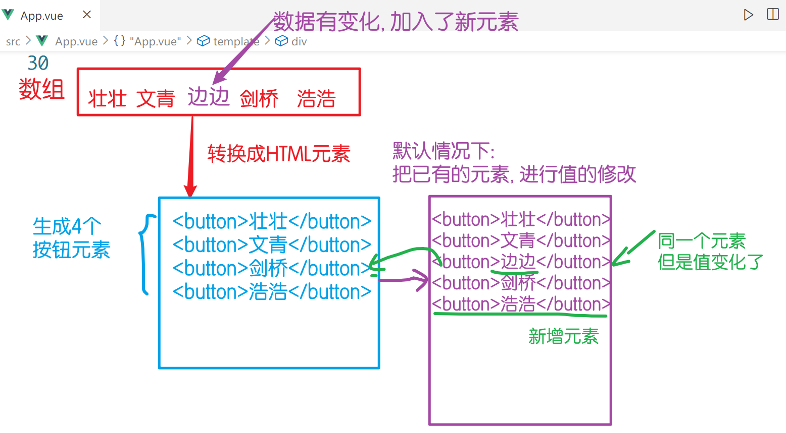
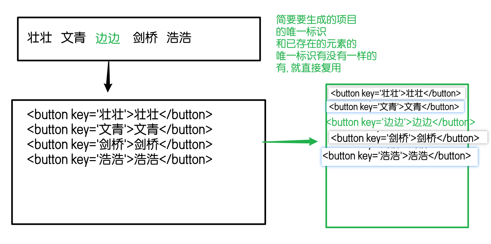
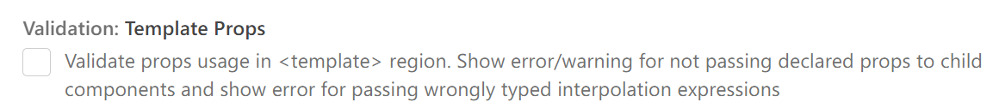
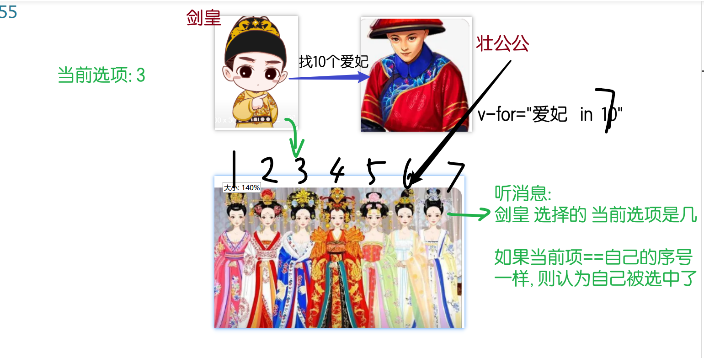
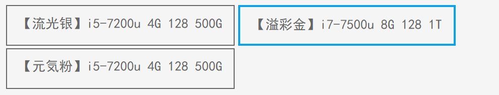

提前准备进入项目包 并 启动:
npm run serve
- 用昨天的包也可以
vscode必须1对1服务项目
选项-配置项 初始化vue对象时填写
App.vue 文件到 vue对象里指令: vue提供的一些属性
v-text: innerText 覆盖标签内容,原样输出文本
v-html: innerHTML 覆盖标签内容, 当HTML解析后显示
v-show: 利用 css display:none 实现隐藏效果 -- 适合频繁切换隐藏的场景
v-if: 根据条件 添加/移除元素. 适合不频繁的, 特别是一次性的隐藏/显示
v-for: 最实用 遍历数组生成元素
v-on: 事件绑定语法 . 原生事件 onclick
@事件名v-bind:属性绑定语法
:属性名v-pre: 原样显示 {{}}
v-once: 一次性渲染, 后续数据变化 不再更新
脚手架: 目前最流行的开发方式 - 工程化
@vue/clivue create 包名npm run servex<template> <div> <!-- 凡是页面上会变化的东西, 必然和数据有关 --> <div class="box"> <div> <!-- 动态样式 :class="{类名: true/false}" --> <span :class="{ active: item == 'zh' }" @click="item = 'zh'"> 账号登录</span > <span :class="{ active: item == 'dx' }" @click="item = 'dx'" >短信登录</span > </div> <div> <!-- ==: 比较, 值一样就行, 类型不一样会自动转一样 --> <!-- ===: 比较 值 和 类型都一样 --> <div v-show="item == 'zh'"> <input type="text" placeholder="手机号/用户名/邮箱" /> <input type="password" placeholder="密码" /> </div> <div v-show="item == 'dx'"> <input type="text" placeholder="请输入手机号" /> <input type="text" placeholder="验证码" /> </div> </div> </div> </div></template>
<script>export default { data() { return { item: 'zh', } },}</script>
<style lang="scss" scoped>// 如果书写 scss 语法有报错, 说明你生成项目时 没有加载css预编译工具.box { width: 300px; background-color: #eee;
> div:first-child { padding: 10px; user-select: none;
span { margin-right: 16px; color: #666; padding-bottom: 4px; // & 并且; 相当于 span.active &.active { color: #000; border-bottom: 2px solid blue; } } }}</style>
没有加key的情况下, vue会尽量复用之前已有的DOM元素, 对变化的位置进行修改

加key的场景中:
当数组发生变化时, 则直接复用 对应唯一标识的元素 -- 更节省资源,提高性能

用喝水的例子
不加唯一标识: 把矿泉水瓶 倒掉, 洗干净, 装新的水
加唯一标识: 直接找到你的矿泉水瓶 接着用 - 不用修改
- 如果没有, 则重新开一瓶新的
xxxxxxxxxx
<template> <div> <!-- 范式 v-for="值 in/of 数组" --> <!-- 波浪线: 不是一个实际的错误, 而是 vscode插件觉得你错误 --> <!-- 因为 插件推荐你书写一个 key 属性, 存放唯一标识 (不能重复) -->
<!-- key是什么? 做标记的 -- 当数组发生变化后的重用问题 -->
<!-- key在数组内容发生修改的时候, 可以提高性能, 直接复用元素 --> <!-- 但是 key 仅仅在数组有变化的时候 才有用 --> <!-- 数组如果没有变更, 则key没有任何作用 -->
<!-- 如果值重复, 则不能做唯一标识: 实在没办法用序号 --> <!-- 理论上, 数据来自服务器, 服务器的数据必然带有 主键id --> <!-- <button v-for="emp in emps" :key="emp">{{ emp }}</button> --> <button v-for="(emp, i) in emps" :key="i">{{ i }},{{ emp }}</button>
<button v-for="(emp, i) in emps">{{ emp }}</button>
<!-- key有什么用? 为元素添加唯一标识, 方便复用 -->
<!-- 当参加学校举办的运动会, 每个人都喝矿泉水. 需要班级去走方阵... 当走完以后, 回来的时候, 怎么知道哪瓶水 是谁喝的 -- 解决方案: 做标记即可, 必须是唯一的 --> </div></template>
<script>export default { data() { return { emps: ['壮壮', '浩浩', '文青', '贝贝', '冬冬', '浩浩'], } },}</script>
<style lang="scss" scoped></style>
xxxxxxxxxx<template> <div> <!-- vue 的for循环, 能够直接遍历数字 --> <div class="pages"> <!-- 遍历的起始值是 1 --> <!-- 高亮: nowPage 和 元素自带的p 相同, 就高亮 -->
<!-- key: 是给vue系统看的, 我们不能主动使用 --> <span v-for="p in 10" :key="p" @click="nowPage = p" :data-p="p" :class="{ active: nowPage == p }" > {{ p }} </span> </div>
<h3>当前页: {{ nowPage }}</h3> </div></template>
<script>export default { data() { return { nowPage: 1, // 当前页=1 } },}</script>
<style lang="scss" scoped>.pages { background-color: #f5f5f6; user-select: none; padding: 20px; display: flex;
span { width: 40px; line-height: 40px; text-align: center; background-color: white; margin-right: 10px; border-radius: 5px; color: #4e6ef2;
&.active { background-color: #4e6ef2; color: white; } }}</style>
如果不想看vscode报错, 可以关闭配置中的此项目

v-for

xxxxxxxxxx<template> <div> <!-- assets: 专门放资源 -- 图片 --> <img :class="{ active: now == 0 }" @click="now = 0" src="./assets/heros/Annie.png" alt="" /> <img :class="{ active: now == 1 }" @click="now = 1" src="./assets/heros/Galio.png" alt="" /> <img :class="{ active: now == 2 }" @click="now = 2" src="./assets/heros/Gwen.png" alt="" /> <img :class="{ active: now == 3 }" @click="now = 3" src="./assets/heros/LeeSin.png" alt="" /> <img :class="{ active: now == 4 }" @click="now = 4" src="./assets/heros/Zoe.png" alt="" />
<hr /> <!-- i 是序号, 下标 --> <img v-for="(img, i) of imgs" :src="img" alt="" :key="i" :data-i="i" @click="now = i" :class="{ active: now == i }" />
<h2>now:{{ now }}</h2> </div></template>
<script>export default { data() { return { now: 0, //当前序号 // 用数组存储所有的图片地址, 然后用循环方式生成 imgs: [ // 图片在JS中使用, 必须用 require 方法引入, 否则无法加载 // 具体原因与脚手架的webpack工具机制有关, 后期铭铭老师讲解 require('./assets/heros/Annie.png'), require('./assets/heros/Galio.png'), require('./assets/heros/Zoe.png'), require('./assets/heros/Seraphine.png'), require('./assets/heros/LeeSin.png'), ], } },}</script>
<style lang="scss" scoped>img.active { border-radius: 50%;}</style>
xxxxxxxxxx<template> <div> <div class="box"> <!-- 解析: 通过激活的序号, 从imgs数组中得到对应的栏目, 读取其中的大图 --> <img :src="imgs[now].lg" alt="" /> <div> <!-- 任务: 通过遍历, 把小图 sm 都展示出来 --> <img v-for="(img, i) in imgs" :key="i" :src="img.sm" alt="" @mouseover="now = i" :class="{ active: now == i }" /> </div> </div> </div></template>
<script>export default { data() { return { // 大小图切换: 1个大图 对应 1个小图 imgs: [ // small:小 large:大 { sm: require('./assets/heros/Annie.png'), lg: require('./assets/heros/Annie.jpg'), }, { sm: require('./assets/heros/Galio.png'), lg: require('./assets/heros/Galio.jpg'), }, { sm: require('./assets/heros/Zoe.png'), lg: require('./assets/heros/Zoe.jpg'), }, { sm: require('./assets/heros/Gwen.png'), lg: require('./assets/heros/Gwen.jpg'), }, ], now: 0, //当前激活序号 } },}</script>
<style lang="scss" scoped>.box > div > img { transition: 0.3s;
&.active { border-radius: 20px; }}</style>
xxxxxxxxxx<template> <div> <!-- 购物车 --> <table> <thead> <tr> <td><input type="checkbox" />全选</td> <td>图片</td> <td>名称</td> <td>价格</td> <td>数量</td> <td>小计</td> </tr> </thead>
<tbody> <tr v-for="(p, i) in products" :key="i"> <td><input type="checkbox" /></td> <td><img :src="p.img" alt="" /></td> <td>{{ p.name }}</td> <td>¥{{ p.price }}</td> <td> <!-- disabled 表单元素的属性, 不可用, 不能交互 --> <!-- true生效 false不生效 --> <button @click="p.count--" :disabled="p.count == 1">-</button> <span>{{ p.count }}</span> <button @click="p.count++">+</button> </td> <td>¥{{ p.price * p.count }}</td> </tr> </tbody>
<tfoot> <tr> <!-- methods中的方法, 使用时需要() --> <td colspan="6" align="right">合计: {{ total() }}</td> </tr>
<tr> <!-- computed中的方法, 使用时不需要() --> <td colspan="6" align="right">合计: {{ total2 }}</td> </tr> </tfoot> </table> </div></template>
<script>export default { data() { return { // 名字,价格,数量,是否勾选,图片 products: [ { img: require('./assets/heros/Annie.jpg'), name: '哥特萝莉', price: 79, count: 1, checked: false, }, { img: require('./assets/heros/Galio.jpg'), name: '幽蓝梦魇 加里奥', price: 100, count: 1, checked: false, }, { img: require('./assets/heros/Gwen.jpg'), name: '咖啡甜心 格温', price: 110, count: 1, checked: false, }, { img: require('./assets/heros/LeeSin.jpg'), name: '龙的传人 李青', price: 1200, count: 1, checked: false, }, ], } }, methods: { total() { // 遍历商品, 计算所有商品价格的总和 var sum = 0 // forEach: 在JS高级 数组高阶函数中讲解的 this.products.forEach(p => (sum += p.price * p.count)) return sum }, }, // 配置项:computed 称为计算属性 // 作用: 存放在这里的函数, 使用时不用(), 会自动触发. 适合没有参数的函数 computed: { total2() { var sum = 0 this.products.forEach(p => (sum += p.price * p.count)) return sum }, },}</script>
<style lang="scss" scoped>table { // 边框合并 border-collapse: collapse;
thead { background-color: #eee; }
td { border: 1px solid gray; padding: 5px 15px;
img { width: 100px; } }}</style>
xxxxxxxxxx<template> <div> <!-- v-model 指令: 称为 双向数据绑定 --> <!-- v-model属于一个智能属性, 会自动判断所在的元素类型, 然后为对应的属性绑定值 -->
<!-- 方向1: 数据gx 绑定给了 勾选框的checked 属性 --> <!-- 方向2: 操作元素的时候, 会自动更新相关的数据 --> <input type="checkbox" v-model="gx" /> <p>当前勾选状态: {{ gx }}</p>
<!-- 简单说: v-model的作用, 收集用户操作的信息, 例如 勾选框, 单选框, 下拉选框, 输入框... --> </div></template>
<script>export default { data() { return { gx: true, //勾选: 初始true } },}</script>
<style lang="scss" scoped></style>
xxxxxxxxxx<template> <div> <div> <label> <!-- 双向绑定特点: 当DOM元素的值变化时, 能自动更新给变量 --> {{ agree }} <input type="checkbox" v-model="agree" /> <span>我已阅读并同意用户注册协议</span> </label> </div> <!-- disabled: 不可用 --> <button :disabled="!agree">注册账号</button> </div></template>
<script>export default { data() { return { agree: false, //同意: 假 } },}</script>
<style lang="scss" scoped></style>
xxxxxxxxxx<template> <div> <!-- 购物车 --> <table> <thead> <tr> <!-- 把计算属性的值 绑定给全选按钮 --> <!-- v-model 绑定的是data中的属性 --> <!-- isCheckAll: 计算属性, 实际是个函数,不能用v-model --> <!-- 勾选框的值被点击后, 发生变化, 触发 change 事件 --> <td> <input @change="chaChanged" type="checkbox" :checked="isCheckAll" />全选 </td> <td>图片</td> <td>名称</td> <td>价格</td> <td>数量</td> <td>小计</td> </tr> </thead>
<tbody> <tr v-for="(p, i) in products" :key="i"> <td> <input type="checkbox" v-model="p.checked" /> <span>{{ p.checked }}</span> </td> <td><img :src="p.img" alt="" /></td> <td>{{ p.name }}</td> <td>¥{{ p.price }}</td> <td> <!-- disabled 表单元素的属性, 不可用, 不能交互 --> <!-- true生效 false不生效 --> <button @click="p.count--" :disabled="p.count == 1">-</button> <span>{{ p.count }}</span> <button @click="p.count++">+</button> </td> <td>¥{{ p.price * p.count }}</td> </tr> </tbody>
<tfoot> <tr> <!-- methods中的方法, 使用时需要() --> <td colspan="6" align="right">合计: {{ total() }}</td> </tr>
<tr> <!-- computed中的方法, 使用时不需要() --> <td colspan="6" align="right">合计: {{ total2 }}</td> </tr> </tfoot> </table> </div></template>
<script>export default { data() { return { // 名字,价格,数量,是否勾选,图片 products: [ { img: require('./assets/heros/Annie.jpg'), name: '哥特萝莉', price: 79, count: 1, checked: false, }, { img: require('./assets/heros/Galio.jpg'), name: '幽蓝梦魇 加里奥', price: 100, count: 1, checked: false, }, { img: require('./assets/heros/Gwen.jpg'), name: '咖啡甜心 格温', price: 110, count: 1, checked: false, }, { img: require('./assets/heros/LeeSin.jpg'), name: '龙的传人 李青', price: 1200, count: 1, checked: false, }, ], } }, methods: { // 全选按钮的 状态变化 事件: change // 事件触发的, 一定要放在methods里 chaChanged(e) { // 此方法是 勾选框 勾选操作触发的, 如何得到勾选框的 勾选状态? // 事件参数 console.log(e.target.checked) //到后台找 checked 属性在哪 // 数据中每个商品的 checked 属性, 都应该和全选一样 this.products.forEach(p => (p.checked = e.target.checked)) },
total() { // 遍历商品, 计算所有商品价格的总和 var sum = 0 // forEach: 在JS高级 数组高阶函数中讲解的 this.products.forEach(p => (sum += p.price * p.count)) return sum }, }, // 配置项:computed 称为计算属性 // 作用: 存放在这里的函数, 使用时不用(), 会自动触发. 适合没有参数的函数 computed: { // 不带参数的, 判断每一个都是勾选 isCheckAll() { // 每一个元素, 都使用箭头函数判断, 返回真还是假 return this.products.every(p => p.checked) },
total2() { var sum = 0 // 只累加 勾选状态是 true 的元素 // 在乘法里, *true 转 *1 *false 转*0 this.products.forEach(p => { sum += p.price * p.count * p.checked }) return sum }, },}</script>
<style lang="scss" scoped>table { // 边框合并 border-collapse: collapse;
thead { background-color: #eee; }
td { border: 1px solid gray; padding: 5px 15px;
img { width: 100px; } }}</style>
制作假数据, 在 data 中 products, 保存了所有商品
每个商品包含信息: 名字, 价格, 图片, 数量, 是否勾选
数据的展示
完成 + 和 - 的制作, 小计功能的实现
合计的制作
使用时需要()来触发computed 中制作方法, 使用时不需要()单选的制作
v-model概念, 双向绑定: 可以在用户操作勾选时, 影响相关的数据, 就是商品的 checked 属性*p.checked , 只计算勾选为真的商品总和全选按钮的状态 和 单选操作联动
every 来判断是否每个商品都是勾选的isCheckAll全选按钮的事件: change
事件参数 来读取元素的 勾选状态值, 然后设置给每个商品的checked属性. 让他们联动xxxxxxxxxx<template> <div> <!-- 表单元素: 可以收集用户信息的元素 -- 输入框,单选,多选,勾选, 下拉选框 -->
<!-- v-model: 特点就是 实时更新数据; 所以uname变量中存储的一定是输入框最新的值 --> <input type="text" v-model="uname" placeholder="请输入姓名" /> <div>uname:{{ uname }}</div> <br /> <button @click="showHello">问好</button> </div></template>
<script>export default { data() { return { uname: '', } }, methods: { showHello() { alert('欢迎' + this.uname + '光临本店') }, },}</script>
<style lang="scss" scoped></style>
xxxxxxxxxx<template> <div> <!-- 多选 --> <h3>壮壮同学, 请勾选你熟练的技能, 便于本公司挑选人才</h3> <p>您勾选的技能: {{ skills }}</p> <div> <div> <input type="checkbox" value="0" v-model="skills" /> <span>HTML5</span> </div> <div> <input type="checkbox" value="1" v-model="skills" /> <span>CSS</span> </div> <div> <input type="checkbox" value="2" v-model="skills" /> <span>JavaScript</span> </div> <div> <input type="checkbox" value="3" v-model="skills" /> <span>Vue</span> </div> </div> </div></template>
<script>export default { data() { return { // v-model属于一个很智能的属性 // v-model="变量" // 如果变量类型是 boolean, 认为 判断是否勾选, true/false // 如果变量类型是 array, 认为 是多选操作, 把值添加到数组里 skills: [], //多选操作, 使用数组来存储选项 } },}</script>
<style lang="scss" scoped></style>
key: 配合for循环使用的唯一标识
v-for
可以直接遍历数字, 适合页数相关功能.
v-for="页数 in 数字"
计算属性
不带参数的函数, 书写在配置项 computed中, 使用时不需要()
但是: 事件绑定的函数只能在methods 中书写, 不能作为计算属性
v-model: 双向绑定
点击时, 高亮点击项目. 要求数据存在数组里, 通过遍历展示到页面上

作业2: